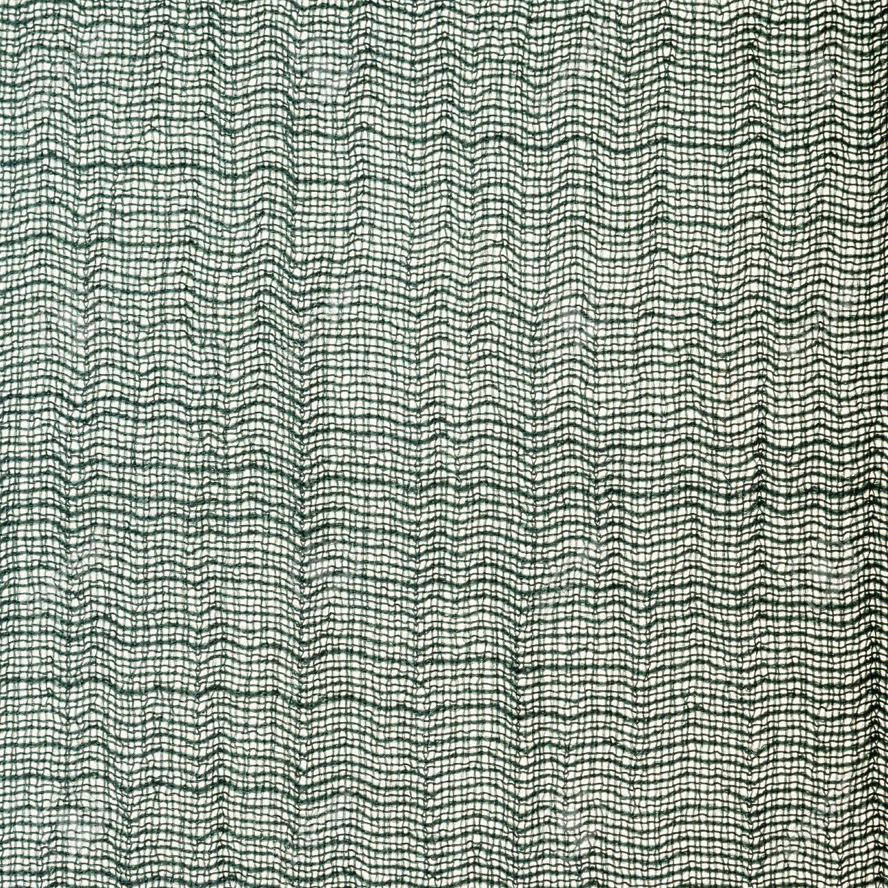
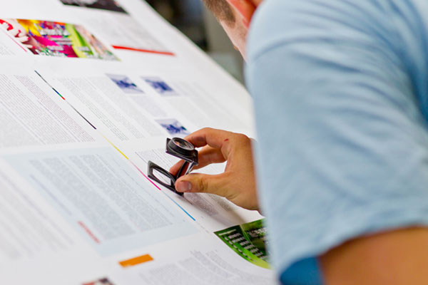
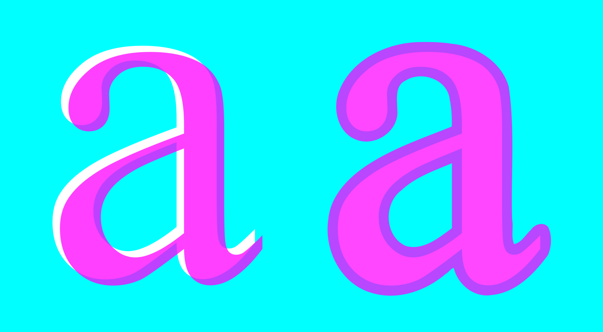
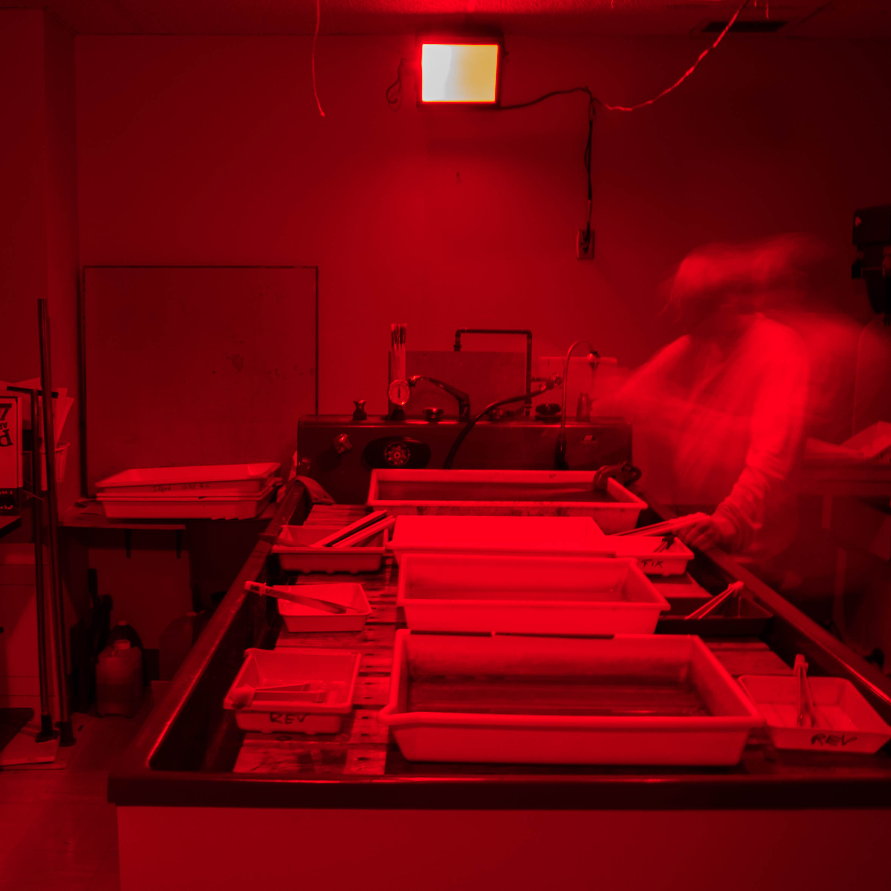
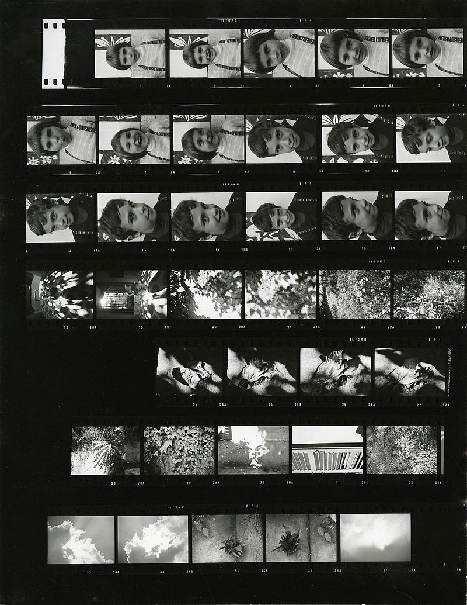

La marque
HSL est une marque de loupe de mesure à l’usage des professionnels de contrôle qualité dans les domaines de l’impression et du textile. En lui empruntant ses initiales, HSL souhaite rendre hommage à l’astronome Henrietta Swan Leavitt. Ses découvertes sur les étoiles variables, dites céphéides, on permit de mesurer la distance entre la Terre et les galaxies.
Au début du XXe siècle on interdisait aux femmes l’accès aux télescopes, elles étaient employées dans les observatoires comme mains d’œuvre bon marché, et se cantonnaient à la tâche fastidieuse d’analyse des plaques photographiques, on les nommait alors les cumputers.
À la manière dont un imprimeur consulte les marques de repérages pour vérifier la bonne superposition de ses plaques offset, Leavitt détaillait minutieusement l’image formée par la superposition de deux plaques photographiques afin d’identifier ses étoiles variables. Elle publie un premier article 1908 dans les annales de l’observatoire d’Harvard nommé 1777 Étoiles variables dans les Nuages de Magellan. D’après l’Académie royale de Suède Une chandelle standard fiable était née, une première marque sur l’étalon de mesure cosmique qui est toujours utilisée aujourd’hui. En utilisant les céphéides, les astronomes allaient bientôt conclure que la Voie lactée n’était que l’une des très nombreuses galaxies dans l’Univers.
Entraînant des découvertes majeures comme la loi Hubble qui prouve l’expansion de l’univers et soutient la théorie du BigBang.
Plot from a paper prepared by Leavitt in 1912. The horizontal axis is the logarithm of the period of the corresponding Cepheid, and the vertical axis is its magnitude. The lines drawn connect points corresponding to the stars' minimum and maximum brightness, respectively.
Nos clients
Professionnels du textile
Comme son nom l’indique, le compte-fils a d’abord servi dans l’industrie textile, pour vérifier la densité de la trame d'un tissu, les points d'un tricot. Le compte-fils utilisé notamment par les canuts lyonnais se nomme quart de pouce, du nom de l’unité de mesure qu’ils employaient et qui s’est maintenue.
Imprimeurs
L’usage du compte-fils s’est généralisé dans les arts graphiques et l’imprimerie : contrôle de la composition, de la trame, de la photogravure. Il permet quelquefois de détecter des défauts sur la plaque d'impression ou la feuille imprimée et sert également à contrôler le repérage. Il permet aussi de déterminer la nature d’un document imprimé tel qu’une gravure ou une estampe.
 Photographes
Le compte-fils sert à examiner le grain d'un négatif photographique, celui d'un tirage, et d’en évaluer la qualité de contraste et de netteté. Par ailleurs, on peut aussi l’utiliser pour contrôler la qualité de juxtaposition des pixels sur un écran d'ordinateur ou un téléviseur.
 